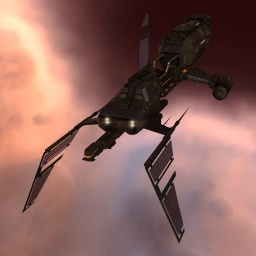

Scythe

Тип корабля: Крейсер
Государство/Организация: Minmatar
Примерная стоимость: 9.570.000 ISK
Описание
В 114-м году по юлайскому летоисчислению крупнейшие государства галактики, увязшие в тяжёлой, затяжной войне без конца и края, были вынуждены обратить внимание на растущую потребность военных флотов в ремонтных кораблях и кораблях обеспечения — она диктовалась самим характером продолжительных боевых действий в межзвёздном масштабе, способных полностью измотать противоборствующие стороны. Конструкторы вновь обратились к проектам фрегатов и крейсеров, хорошо знакомым пилотам-капсулёрам; в случае с флотом Республики Минматар результатом переосмысления боевой доктрины стали, помимо всего прочего, модернизация и переразвёртывание крейсеров типа «Сайф».
Крейсеры типа «Сайф» — древнейшие из минматарских кораблей, всё ещё стоящих на вооружении. Они прошли через множество битв и являются неотъемлемой частью минматарских преданий, истинным наследием минматарского народа. Во время переработки конструкции пришлось пожертвовать всеми обновлениями прошивки, направленными на увеличение выработки экстракторов, но взамен корабль получил две новые независимые друг от друга системы — для дистанционной накачки щитов и для управления беспилотными дронами.
Характеристики
Корпус
Запас прочности корпуса: 1.300 ед.
Вместимость грузового отсека: 475 м^3
Объем отсека для дронов: 45 м^3
Пропускная способность канала телеуправления: 45 Мбит/с
Масса: 11.110.000 кг
Занимает объем: 89.000,0 м^3 (10.000,0 м^3 в разобранном виде)
Влияние инертности конструкции: 0,6x
Сопротивление корпуса ЭМ-урону: 33 %
Сопротивление корпуса термальному урону: 33 %
Сопротивление корпуса кинетическому урону: 33 %
Сопротивление корпуса фугасному урону: 33 %
Броня
Запас прочности брони: 1.100 ед.
Сопротивление брони ЭМ-урону: 60 %
Сопротивление брони термальному урону: 35 %
Сопротивление брони кинетическому урону: 25 %
Сопротивление брони фугасному урону: 10 %
Щит
Запас прочности щита: 1.400 ед.
Влияние на время регенерации щитов: 20 минут и 50 секунд
Сопротивление щита ЭМ-урону: 0 %
Сопротивление щита термальному урону: 20 %
Сопротивление щита кинетическому урону: 40 %
Сопротивление щита фугасному урону: 50 %
Сопротивление средствам РЭП
Сопротивление накопителя нейтрализирующему воздействию: 0 %
Сопротивление воздействию генератору стазис-поля: 0 %
Сопротивление воздействию помех на наводку вооружения: 0 %
Накопитель энергии
Емкость накопителя: 1.750,0 ГДж
Время востановления заряда: 5 минут и 50 секунд
Целеуказания
Максимальная дальность захвата цели: 52,5 км
Максимальное количество захваченных целей: 8
Радиус сигнатуры: 75 м
Разрешающая способность систем захвата цели: 315 мм
Эффективность радарной системы: -
Эффективность магнитнометрической системы: -
Эффективность гравиметрической системы: -
Эффективность ладарной системы: 12 ед.
Двигательная установка
Максимальная скорость: 250 м/с
Скорость в варп-режиме: 4,0 а.е./с.
Служба оснащения
Мощность ЦПУ: 285,0 Тф
Мощность реактора: 345 МВт
Калибровка: 400 ед.
Точки монтажа орудийных установок: 2
Точки монтажа пусковых установок: 1
Разъемы большой мощности: 3
Разъемы средней мощности: 5
Разъемы малой мощности: 5
Разъемы под установку тюнинг-модулей: 3